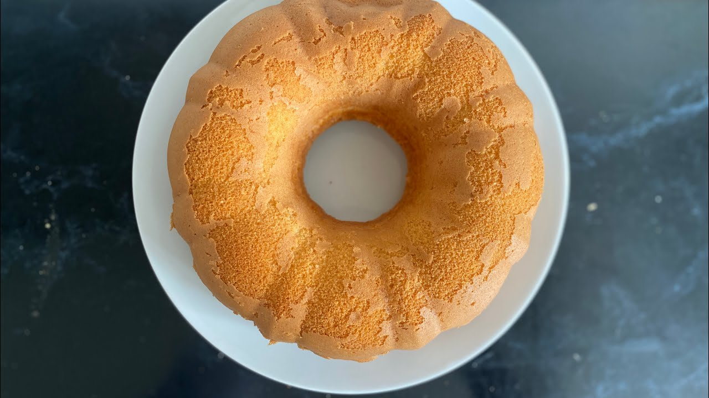

Somali Cake Recipe

Description
This cake recipe is a delicious and easy-to-make dessert that's perfect for any occasion. Made with simple ingredients like flour, sugar, and eggs, it has a dense and moist texture with a sweet and fragrant flavor. It's also gluten-free, making it a great option for those with dietary restrictions.
Ingredients
- 2 cups flour
- 1 cup sugar
- 1 cup unsalted butter, softened
- 4 eggs, beaten
- 1 cup milk
- 1 teaspoon baking powder
- 1 teaspoon vanilla extract
- 1/2 teaspoon ground cardamom
- 1/4 teaspoon salt
- 1/4 cup sliced almonds or pistachios, for garnish (optional)
Directions / Steps
- Preheat the oven to 350°F (180°C). Grease a 9-inch cake pan with butter or cooking spray.
- In a mixing bowl, cream the softened butter and sugar together until light and fluffy.
- Add the beaten eggs to the mixing bowl, one at a time, and beat until well combined.
- In a separate mixing bowl, whisk together the flour, baking powder, ground cardamom, and salt.
- Add the dry ingredients to the wet ingredients in the mixing bowl, alternating with the milk, and mix until well combined.
- Stir in the vanilla extract.
- Pour the cake batter into the prepared cake pan, and smooth the top with a spatula.
- Sprinkle sliced almonds or pistachios on top of the cake batter, if using.
- Bake the cake in the preheated oven for 40-45 minutes, or until a toothpick inserted into the center of the cake comes out clean.
- Remove the cake from the oven, and let it cool in the pan for 10-15 minutes.
- Run a knife around the edges of the cake to loosen it from the pan, then invert the cake onto a wire rack to cool completely.
- Serve the cake slices with tea or coffee for a delicious dessert or snack.